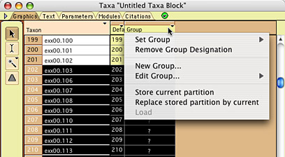
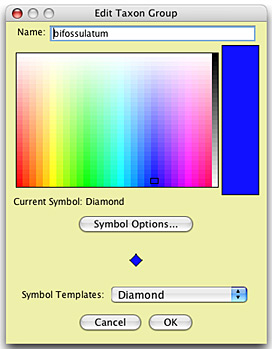
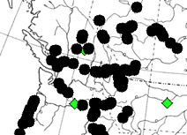
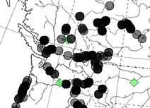

The symbols used for taxa can be changed. By default, taxa are indicated by black dots on the map. To turn off these standard dots and use custom symbols:
- turn off standard taxon spots (Drawing>Show Standard Taxon Spots if in a taxa window, Drawing>Show Terminal Nodes if in a tree window).
- turn on showing of taxon symbols based upon the group of the taxon (Taxa>Show Taxon Group Symbols).
With the taxon symbols now being used for taxa, you can be change the nature of the symbols used for taxa. Before you do this, you will need to define taxon groups.
Taxon Groups
Taxa can be assigned to Taxon Groups, and a specific symbol assigned to each Taxon Group. For example, one might wish to group all specimens that correspond to a species called "bifossulatum" into one taxon group. To do this, open the List of Taxa window, and select the taxon (specimens) to be designated as belonging to the group. Then, touch on the title of the Group column, and a popup menu will appear:

In that menu, choose New Group, to create a new group with your specified name. Once a group is created, it can be assigned to other taxa using the Set Group submenu of this same popup menu.
When you choose New Group, a window will appear in which you can edit the group's characteristics: its name, and the color, shape, and size of its symbol.
Assigning a symbol to a Taxon Group
The default symbol for a taxon group is a circle. You can adjust the size of the default circle using the "Size of Default Symbol" item under the Taxa menu, but you cannot adjust the color of the default symbol.
To change the symbol more substantially, use the Edit Taxon Group window (which you will see when you choose New Group or Edit Group from the popup menu shown above). It will look something like this:

Using the Symbol Templates popup menu, you can make symbols that are circles, squares, diamonds, triangles, and stars. Once you have chosen the symbol template, you can adjust details of the symbol (such as size and whether or not it is a filled or open symbol) using the Symbol Options... button.
Using symbols
To have the taxon group symbol displayed for a taxon, turn on Taxa>Show Taxon Group Symbols. To have it use the taxon group color for a symbol, use Taxa>Use Group Colors for Symbols.
Darkening symbols when they overlap
By default, taxon symbols are shown opaque, at full darkness (as on left, below). However, you can ask Mesquite to use transparent symbols, that only achieve full darkness when several of them overlap, as shown on the right, below.
 |
 |
Normal |
Darken Where Overlap |